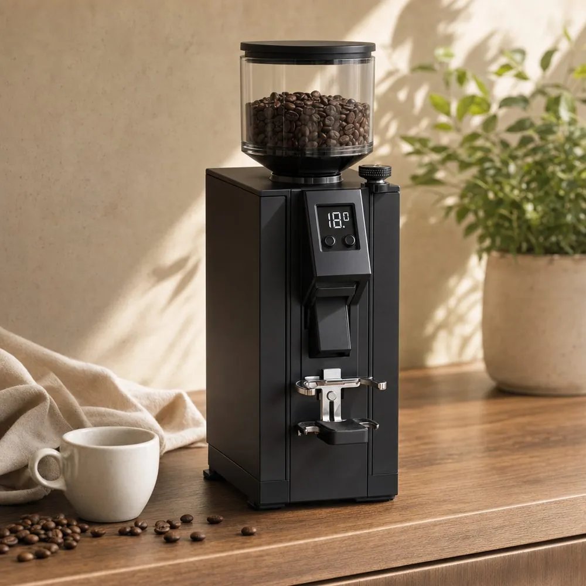

Die Mühle macht mehr Geschmacksunterschied als die Maschine. Trotzdem wird sie beim Budget am häufigsten vergessen. Wir haben drei Espressomühlen von rund 190 bis 420 € verglichen: vom Budget-Einstieg über den Allrounder bis zur Mühle, die auch Premium-Maschinen voll ausreizt.
| Eureka Mignon Specialità Unsere Empfehlung | Sage Smart Grinder Pro | Graef CM 800 | |
|---|---|---|---|
| Gesamtnote | 4,7 Unsere Empfehlung | 4,4 Preis-Leistung | 4,0 Budget-Tipp |
| Preis* | ab 332,99 € | ab 207,99 € | derzeit nicht lieferbar |
| Mahlwerk | 55-mm-Flachscheiben aus gehärtetem Stahl | Edelstahl-Kegelmahlwerk | Edelstahl-Kegelmahlwerk |
| Mahlgradeinstellung | stufenlos (Mikrometrik) | 60 Stufen | 40 Stufen |
| Dosierung | elektronischer Timer, 1 oder 2 Bezüge programmierbar | LCD, Timer in 0,2-s-Schritten, Siebträger-Auflage | Timer-Drehregler, Siebträgerhalter |
| Lautstärke | sehr leise (gedämmtes Gehäuse) | mittel | mittel |
| Stromkosten pro Jahr (Schätzung) | unter 1 € | unter 1 € | unter 1 € |
| Für wen? | Mittelklasse- & Premium-Setups, die die Maschine ausreizen wollen | Sage-Setups & Allrounder bis Mittelklasse | Einstieg mit kleinem Budget |
*Marktpreise Deutschland, Preisprüfung 17. November 2026. Tagesaktuelle Preise beim Händler prüfen. Genannt ist der günstigste lieferbare Preis aus unserer automatischen Prüfung bei roastmarket und im Graef-Shop. Amazon-Preise zeigen wir nicht; der Amazon-Link führt zum aktuellen Angebot. Stromkosten: Schätzung mit höchstens 60 Sekunden Mahlzeit pro Tag und 37 ct/kWh. Die Mühlen haben laut Hersteller 128 bis 310 W, selbst mit 400 W wären es ca. 0,90 € im Jahr (Methode: Stromverbrauch & Kosten). Alle drei Mühlen sind espressotauglich fein und passen zu allen Maschinen aus unseren Vergleichen (Einsteiger, Mittelklasse, Premium). Produktabbildungen sind KI-generierte Illustrationen zur Veranschaulichung, keine Herstellerfotos.
| Kriterium (Gewicht) | Mignon Specialità | Smart Grinder Pro | CM 800 |
|---|---|---|---|
| Mahlqualität & Espresso-Eignung (45 %) | 4,8 | 4,3 | 3,9 |
| Bedienung & Dosierung (20 %) | 4,6 | 4,5 | 4,0 |
| Verarbeitung & Lautstärke (15 %) | 4,8 | 4,1 | 3,9 |
| Preis-Leistung (20 %) | 4,4 | 4,6 | 4,5 |
| Gesamtnote | 4,7 | 4,4 | 4,0 |

Die Mignon Specialità aus Florenz ist seit Jahren die meistempfohlene Espressomühle im Home-Barista-Bereich, und das zu Recht: Ihre 55-mm-Flachscheiben mahlen bemerkenswert homogen, die stufenlose Mikrometrik-Einstellung erlaubt exaktes Feintuning auf die Zehntelsekunde Bezugszeit, und dank gedämmtem Gehäuse ist sie eine der leisesten Mühlen ihrer Klasse. Der elektronische Timer dosiert reproduzierbar direkt in den Siebträger. Kurz: Sie reizt jede Maschine von der Mittelklasse bis zur Lelit Bianca voll aus und ist für viele die letzte Mühle, die sie je kaufen.
Der Smart Grinder Pro ist das passende Gegenstück zu Sage-Maschinen ohne integriertes Mahlwerk (z. B. Bambino & Bambino Plus): 60 Mahlgrade, LCD mit Timer-Dosierung in 0,2-s-Schritten und eine praktische Siebträger-Auflage für 54- und 58-mm-Träger. Das Edelstahl-Kegelmahlwerk mahlt für die Preisklasse sauber und espressotauglich fein; erst im direkten Vergleich mit der Eureka merkt man die etwas geringere Homogenität. Wer unter 250 € bleiben will, bekommt hier das rundeste Gesamtpaket.
Die deutsche Graef CM 800 ist ein preiswerter Einstieg ins frische Espressomahlen: Edelstahl-Kegelmahlwerk, 40 Mahlgradstufen und ein Siebträgerhalter für die direkte Dosierung. Die Grenzen: Die Stufen sind im Espresso-Bereich etwas grob gerastert, das Feintuning ist dadurch weniger präzise, und bei sehr hellen Röstungen geht ihr die Feinheit aus. Für Einsteiger-Setups mit Bambino, Lumero oder Dedica ist sie dennoch ein riesiges Upgrade gegenüber vorgemahlenem Kaffee. Ob sie gerade lieferbar ist, zeigt die Vergleichstabelle oben.
| Du willst… | Unsere Empfehlung |
|---|---|
| Eine Mühle, die Mittelklasse- und Premium-Maschinen voll ausreizt | Eureka Mignon Specialità |
| Den besten Allrounder um 210 € (passt gut zu Sage-Maschinen) | Sage Smart Grinder Pro |
| Frisch gemahlenen Espresso mit minimalem Budget | Graef CM 800 |
| Gar keine separate Mühle kaufen | Sage Barista Pro oder Quick Mill Pegaso PID (Mühle integriert) |
Weil Espresso frisch und präzise gemahlenen Kaffee braucht: Eine 300-€-Maschine mit guter Mühle schlägt eine 3.000-€-Maschine mit vorgemahlenem Kaffee. Faustregel: mindestens ein Drittel des Gesamtbudgets in die Mühle investieren.
Espressotaugliche Einsteiger-Mühlen wie die Graef CM 800 und der Sage Smart Grinder Pro kosten meist um 200 bis 250 €. Für gut 300 € und mehr (Eureka Mignon Specialità) bekommst du eine Mühle, die auch Premium-Maschinen voll ausreizt. Den zuletzt geprüften Preis zeigt die Vergleichstabelle.
In aller Regel nein: Schlagmahlwerke sind grundsätzlich ungeeignet, und die meisten Filterkaffee-Mühlen mahlen weder fein genug noch fein genug justierbar. Für Espresso braucht es ein Kegel- oder Scheibenmahlwerk mit feiner, am besten stufenloser Einstellung.
So fein, dass ein Brühverhältnis von 1:2 (z. B. 18 g Kaffeemehl auf 36 g Espresso) in 25 bis 30 Sekunden durchläuft, also deutlich feiner als Filterkaffee. Der exakte Wert hängt von Bohne und Maschine ab und wird über die Bezugszeit kalibriert.
Mit festem Referenzrezept: 18 g rein, Ziel 36 g in 25 bis 30 s. Läuft der Bezug schneller, feiner mahlen; läuft er langsamer, gröber mahlen. Immer nur eine Variable ändern und nach jeder Anpassung 1 bis 2 Bezüge abwarten, bis das Restmehl der alten Einstellung durch ist. Schmeckt der Espresso trotzdem sauer oder bitter, hilft die Espresso-Diagnose.
Beide Bauarten können exzellent: Scheibenmahlwerke (Eureka Mignon Specialità) gelten als besonders homogen und „modern-klar“ im Geschmack, Kegelmahlwerke (Sage, Graef) sind günstiger zu fertigen und drehen langsamer. Wichtiger als die Bauart sind Mahlgüte, Justierbarkeit und Verarbeitung.
Retention ist das Kaffeemehl, das nach dem Mahlen in der Mühle zurückbleibt und beim nächsten Bezug mit ausgegeben wird. Viel Retention bedeutet ältere Mehlanteile im Sieb und träge Mahlgrad-Wechsel; moderne Mühlen minimieren das konstruktiv.
Beim Single Dosing wiegst du für jeden Bezug die exakte Bohnenmenge ab, statt einen vollen Bohnenbehälter zu nutzen: maximale Frische und einfacher Bohnenwechsel, dafür ein Arbeitsschritt mehr. Mit Waage und ggf. Bellows (Blasebalg) funktioniert das an fast jeder Mühle.
Weil Bohnen „leben“: Alter der Röstung, Luftfeuchtigkeit und Bohnenwechsel verändern das Mahlverhalten. Kleine Korrekturen um wenige Stufen oder Mikrometer alle paar Tage sind völlig normal und kein Qualitätsmangel.
Bohnenbehälter und Auswurf wöchentlich trocken auswischen, Mahlkammer alle 4 bis 8 Wochen ausbürsten oder aussaugen, alle paar Monate Reinigungsgranulat durchmahlen. Kaffeeöle werden ranzig, deshalb ist eine saubere Mühle ein direkt schmeckbares Upgrade.